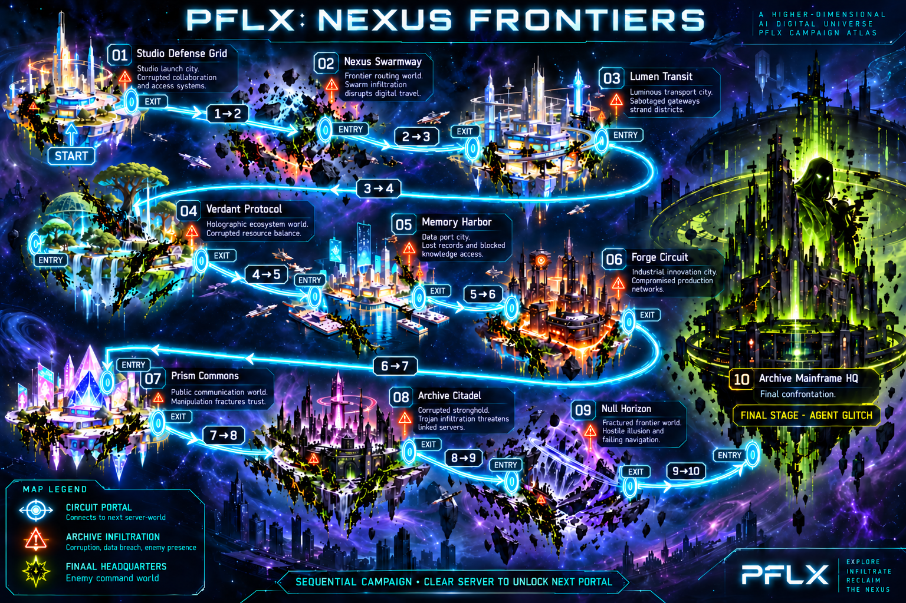
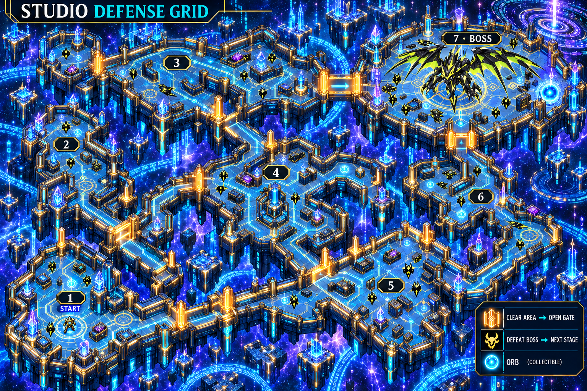
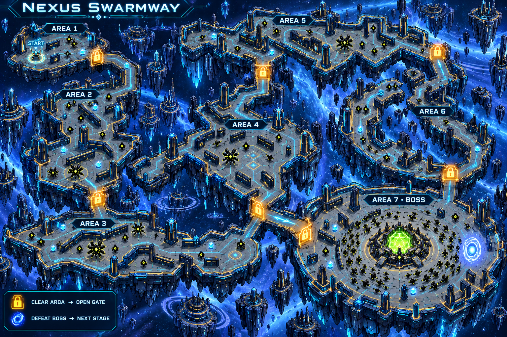
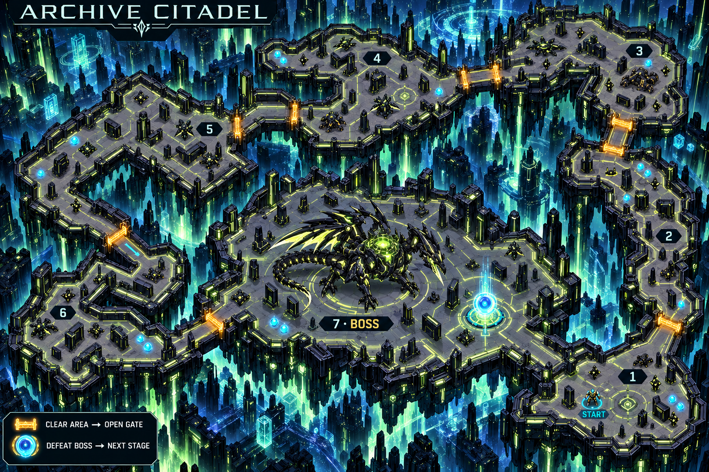

Ten server-worlds within The Nexus AI digital universe.
A campaign through nine server-worlds under Archive attack, ending at Server 10: Archive Mainframe HQ and Agent Glitch. Circuit portals connect cities and worlds within the AI digital universe.
New world names and narrative problems are proposals. Server numbers do not automatically equal Evo levels.

Each level has six combat districts followed by a final boss area. Correct quiz answers power attacks; defeated Archives drop orbs. Clear required enemies and waves to open the next gate.
Concept art awaiting gameplay implementation. Some drawn links suggest shortcuts: the playable layout must remove them or keep them locked until all prior districts clear. The required route is 1 → 2 → 3 → 4 → 5 → 6 → 7. Corridor alcoves are not extra areas.


